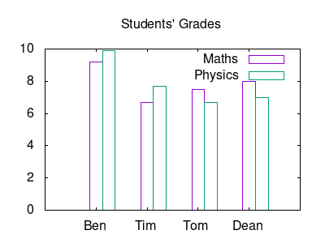

GNUPLOT is a powerful plotting engine. To install gnuplot in orgmode you need to follow the instructions online and put in your Emacs init file the following chunk to activate gnuplot in babel.
;; active Babel languages (org-babel-do-load-languages 'org-babel-load-languages '((gnuplot . t))) ;; add additional languages with '((language . t)))
Eric Schulte, the author of babel, has many examples in his org-scrapts, but also check Org-Plot page and the tutorial for plotting tables using org-plot.
For plotting tables I am using the instructions from Org-Plot. I am running the Emacs-lisp command src_elisp{ (local-set-key "\M-\C-g" 'org-plot/gnuplot) } (this format is inline code chunk in orgmode), which defines a local keyboard shortcut for M-C-g in order to run gnuplot.
The source code below plots the table as a histogram using the M-C-g.
#+PLOT: title:"Grades in Physics and Mathematics" ind:2 deps:(3 4) type:2d with:histograms set:"yrange [0:]" set:"xlabel 'Student'" set:"ylabel 'grades'" set:"output './img/gnuplot-grades.png'" set:"terminal png size 600,500" |---+--------+-------------+---------| | | Grades | Mathematics | Physics | |---+--------+-------------+---------| | # | Ben | 9.2 | 9.9 | | # | Tom | 6.7 | 7.7 | | # | Tim | 7.5 | 6.7 | | # | Dean | 8.0 | 7.0 |
Figure 1: Plot histogram
Some important keywords for babel's definition are:
set: set any gnuplot command
ind: specify which column will be the x-axis
deps: which columns hold the data
You can do the same plot by writing a gnuplot script. I noticed that using hashtags (#) in the first column of the table, you cannot access the data in columns. Following the first keyword using the 2:xtic(1) is collecting the data from the 2nd column and assigns the 1st column of the table as legends of the x-axis. After the second keyword using the ($3) reads the data from the 3rd column.
#+tblname: grades | Ben | 9.2 | 9.9 | | Tim | 6.7 | 7.7 | | Tom | 7.5 | 6.7 | | Dean | 8.0 | 7.0 | #+begin_src gnuplot :var data=grades :results output :file ./img/grades.png set title "Students' Grades" set yrange[0:10] set style data histogram set terminal png size 400,300 plot data using 2:xtic(1) title 'Maths', '' using ($3) title 'Physics' #+end_src #+RESULTS: [[file:./img/grades.png]]

Figure 2: Change the size of the png output
If you don't want to assign legends on the x-axis you can use the command unset xtic. In this case you have to rewrite the last line as follows:
plot data using ($2) title 'Maths', '' using ($3) title 'Physics'